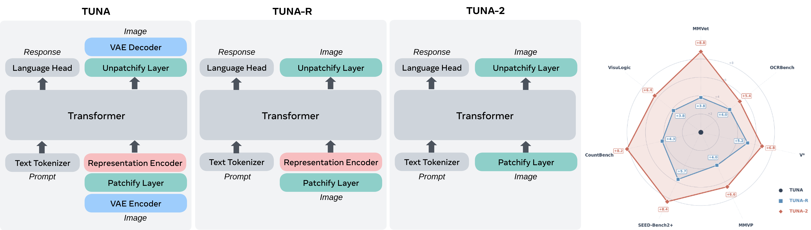
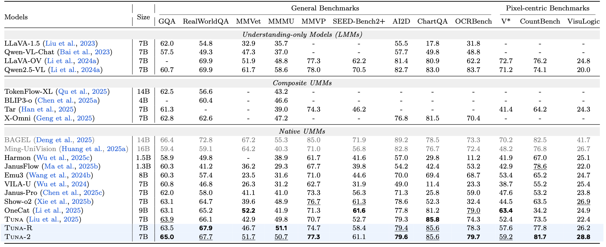
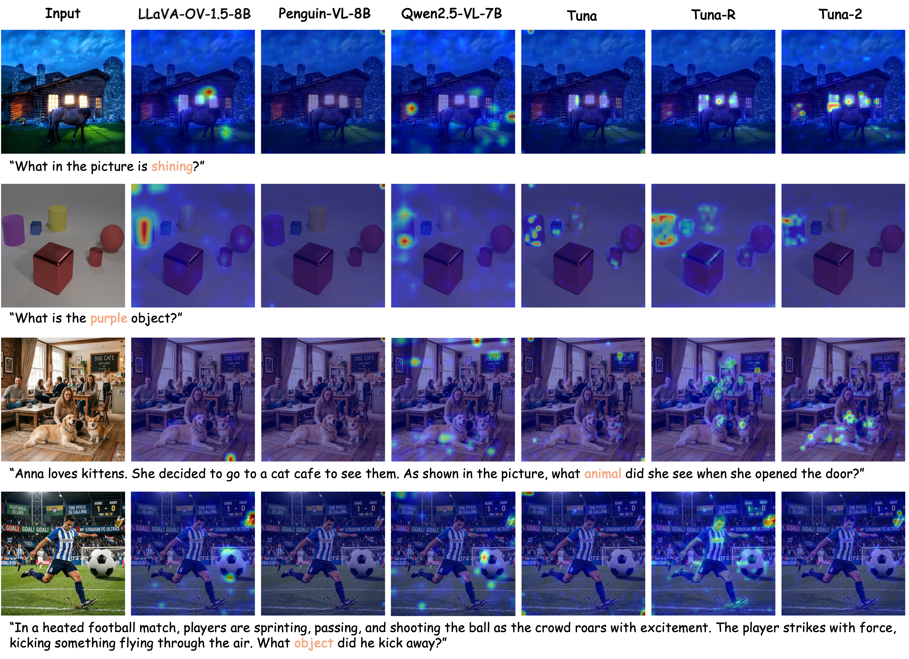

* Joint first authors, listed alphabetically by last name

Unified multimodal models typically rely on pretrained vision encoders and use separate visual representations for understanding and generation, creating misalignment between the two tasks and preventing fully end-to-end optimization from raw pixels. We introduce Tuna-2, a native unified multimodal model that performs visual understanding and generation directly based on pixel embeddings. Tuna-2 drastically simplifies the model architecture by employing simple patch embedding layers to encode visual input, completely discarding the modular vision encoder designs such as the VAE or the representation encoder. Experiments show that Tuna-2 achieves state-of-the-art performance in multimodal benchmarks, demonstrating that unified pixel-space modelling can fully compete with latent-space approaches for high-quality image generation. Moreover, while the encoder-based variant converges faster in early pretraining, Tuna-2's encoder-free design achieves stronger multimodal understanding at scale, particularly on tasks requiring fine-grained visual perception. These results show that pretrained vision encoders are not necessary for multimodal modelling, and end-to-end pixel-space learning offers a scalable path toward stronger visual representations for both generation and perception.
We propose Tuna-2, a family of native unified multimodal models that supports both multimodal understanding and generation directly in pixel space, achieving state-of-the-art performance across a broad range of benchmarks.
With sufficient end-to-end vision pretraining, the encoder-free Tuna-2 consistently outperforms the encoder-based Tuna-R on multimodal understanding, especially on fine-grained, perception-heavy benchmarks—demonstrating that large-scale pixel-level training can fully replace pretrained vision encoders.
Through controlled comparison under the same unified framework, we reveal that scaling up vision pretraining is the key to closing and surpassing the gap between encoder-free and encoder-based designs, offering actionable insights for future native unified multimodal models.
Tuna-2 discards the VAE module and operates the vision-language backbone and flow matching head entirely in pixel space. We adopt the x-prediction and v-loss paradigm for pixel-space flow matching, employing rectified flow and its linear schedule to construct noisy samples directly in pixel space.
We introduce a masking-based visual feature learning scheme that randomly selects a subset of image patches and replaces them with a learnable mask token. This creates a harder denoising problem for generation and forces the model to perform multimodal reasoning under partial visual observation for understanding.
Tuna-2 is trained using a three-stage strategy: (1) unified representation and flow matching head pretraining, (2) full model continue pretraining with expanded capabilities, and (3) supervised fine-tuning (SFT) for high-quality image generation and instruction following.
Tuna-2 uses simple patch embedding layers to encode input images into vision tokens, offloading the vision-language modelling task purely into the LMM decoder. This eliminates the inductive bias in pretrained representation encoders and simplifies the architecture to a single unified transformer.
Under a controlled, fair comparison with the same training recipe, the encoder-free Tuna-2 outperforms the encoder-based Tuna-R on the majority of multimodal understanding benchmarks after sufficient vision pretraining, particularly on pixel-centric tasks that demand fine-grained visual perception.

Visualization of attention maps across different models reveals that Tuna-2 variants attend more precisely to the relevant visual regions, demonstrating stronger fine-grained visual perception capabilities.

@article{tuna2,
title={Tuna-2: Pixel Embeddings Beat Vision Encoders
for Multimodal Understanding and Generation},
author={Liu, Zhiheng and Ren, Weiming and Huang, Xiaoke
and Chen, Shoufa and Li, Tianhong and Chen, Mengzhao
and Ji, Yatai and He, Sen and Schult, Jonas
and Zeng, Belinda and Xiang, Tao and Chen, Wenhu
and Luo, Ping and Zettlemoyer, Luke and Cong, Yuren},
journal={arXiv preprint},
year={2026}
}